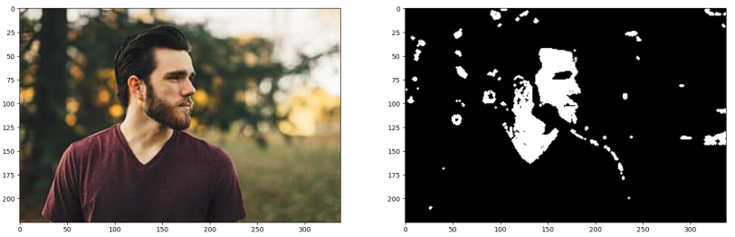

Cartoonify
Joseph Lee, Kelsey Henson, Lydon Puzon, Roger Nhan, Sabrina Chua
Fall 2020 CS 4476 Computer Vision: Class Project
Georgia Tech
Project proposal
Click hereAbstract
The goal of this project is to stylize an inputted image to appear like a cartoon image. To accomplish this, we will detect the prominent shapes within the image and add an outline to them, as well as normalize the color groups of the image, narrowing each object to a pallet of a predetermined amount of colors. Additionally, we will apply minimal edge outlines within the image to make the primary textures more prominent.Teaser figure

Introduction
Our project is attempting to convert an image to a cartoon version of itself. We are effectively producing a “cartoon filter” that can be placed over any image using a series of computer vision functions. It’s main function serves similarly like a snapchat filter or a simplified version of real-life to animation cinema effects.Some inspirations for our project came from the Medium and Analytics India Cartoon Images where they would take an image, detect the edges, convert it into grayscale, apply a medium blur, and cartoonify the image. These were separated into the categories: color normalization, edge detection, and texture smoothing; therefore, we decided to move forward on focusing in these categories to create a cartoonized image. In addition, we found the article "Skin Detection using HSV color space" which was relevant when we were handling faces and skin detection. The work was a skin detection implementation by using the H channel to characterize the skin color range, which gave us more insight on how to effectively address faces and skin. Check out our references for more information.
Our approach will take into account many computer vision concepts covered throughout CS4476 such as k-means clustering in image coloring, filters applied to even textures, and edge detection while also combining and altering them to find a combination and order that produces efficient and effective results.
Approach
Normalizing Colors
Our approach for altering the colors will include normalizing the color pallet using hue saturation and grouping shade colors together. To normalize the pallet, we will choose a predefined set of colors that generalizes only a few colors to each object. This choice will be made using hue saturation techniques. We will then group together these colors by the objects they belong to in order to reduce the amount of color variation across the image.Reinforcing Outlines
In order to create a hard outline of objects within the object, such as in a cartoon styled image, we will smooth and reinforce the outlines of objects within the images. We will smooth the outlines to be straighter and more defined to reduce excessive corners and line complexity. The techniques used in this will be Canny Edge Detection to first find the object lines and thresholding to detect and increase the thresholds of the images to a larger pixel value.Smooth Textures
To recreate the textures of a cartoon, we will detect highly textured areas within the images and either replace those selected texture patterns with a reduced image bank of smoother textures or apply a median filter to blur the image slightly to reduce the textures. Our team will decide on the final technique utilized here through experimentation on the image to test for best results.Handling Faces/Skin
The need for recognizing areas of an image corresponding to both faces and skin is a priority for this project. This is because we want to handle how we cartoonify backgrounds differently from how we cartoonify faces and skin, as cartoons generally use a single skin tone for each person, so the filters and normalization we do on skin and objects/backgrounds need to differ. The main result we obtained from this section is a function that will convert an RGB image into a connected components numpy array with skin sections as connected components.Experiments and results
Normalizing Coloring
In order to provide a cartoon effect on an image, we are simplifying the coloring of the image to fewer, normalized colors. Our function for normalizing the coloring of our test images takes in an input image and averages the colors in each region of the image using kmeans. The resulting output in a "quantized" image in which the pixels have a more uniform distribution across the entire image.A consideration to be made for this function is the k-value being inputted as an argument which controls how many clusters are being formed in the kmeans clustering process. Each test case image will require testing to observe its most effective k-value as while lower k-values result in more thorough averaging (and a more "cartoon"-ified effect), they also reduce the amount of colors in the image as a whole. The k-values in a sense dictate how many colors will be visible in the image as each color correlates to a cluster center. Therefore, a specific image will require a specifically chosen k-value to balance this consideration of preserving coloring and gaining averaged results.
This first set of images displays our results for normalizing an image at k=10 cluster centers. The figure in the left represents the non-converted image while the figure on the right represents the converted image. Particularly for the dog itself and the background, this function outputs an image with the coloring visibly simplified from the original.
The figure below, using k-value=14 cluster center, in this case shows a less distinctive result. Noticeably, the coloring bandana and painting in the background are more normalized to solid colors. The background of wood chips is relatively the same, however, because it is heavily textured. For this instance, we may need to consider adding texture smoothing before color alterations as we continue with the project.
Edge Detection and outlining
For the automatic edge detection, we used a canny edge detector. We experimented with different sigmas, low thresholds, and high thresholds to find the optimal setting for our needs. To accomplish this, we would take a sample image and plot a 5x5 grid of images, varying the low threshold on the y-axis and the high threshold on the x-axis. We would then run this test for varying sigma values and ultimately decide which configuration gave the best qualitative results. After finding these values, we run the canny edge detection on a gray-scale version of the input image and overlay the resulting edges as a black outline on the image. To better approximate how this would be used in the finished project, we also would first quantize the image before performing these steps. Additional experimentation performed was processing the edge detection on the original image, or a higher bin count quantizated version of the image (k=32), and then overlay those edges on a lower bin count quantized version (k=8). This served the give more outlining detail in the image than is apparent from just the colors, and gave a better sense of texture in the resulting image.Outline reinforcement was achieved by using a modification of the canny edge detector. The process of non-maximal suppression retains only the local maxima to obtain an absolute binary map of the edges. This process does not retain an accurate representation of the thickness of the edges. Applying hysteresis thresholding directly to an energy image both accurately represents the edges and their thickness.
Another method that will be included in the next iteration is adaptive thresholding. Instead of hysteresis thresholding, which retains points on the edges based on the intensity of the points on the line adjacent to it, adaptive thresholding considers local neighborhoods instead. This will theoretically improve the accuracy of the thickness of the outlines.
Smooth Textures
For smoothing textures, we initially experimented with various filters including the median, gaussian, and laplace filter. We ran these tests against our compiled 10 images to experiment with initially and visually checked for the desired results. For filters such as the gaussian, it resulted in too blurry of a result; therefore, we decided against using those. When trying other filters, we also ran into an issue where the filters would discolor the image when the size was set too high and depending on the contrast of the image, the filter size needed to be adjusted.


Handling Faces/Skin
We used rgb2hsv to convert an input image into HSV space. Next, we used thresholding to convert the HSV image into a binary image, only leaving pixels that had H and S values between our determined thresholds. Next, we eroded and dilated 5 times each (not alternating) in order to close gaps. We then applied connected components which resulted in an output numpy array with 0s everywhere and component numbers in the pixels corresponding to connected components. The obstacles encountered were determining a good HSV range to detect skin, as this approach yields suboptimal results on skin colored backgrounds. This could be addressed in the next iteration by strictly implementing a face detector using something like Viola Jones or applying SIFT on the blobs returned by the skin detector.

Face/Skin Detection Test
Looking at the examples of processing our input images, we can see the face/skin detection approach works very well on images without skin colored backgrounds--it strictly selects skin regions in the image, and the binary image appears to be very accurate in including only face/skin areas--while performing suboptimal on images with skin colored backgrounds, as the face or skin regions in the binary/connected components images extend beyond the faces/skin regions. Parameters involved here included the number of times we eroded/dilated which affected the extent at which holes were filled as well as the HSV range for skin color detection. The ‘5’ for erosion/dilation was arrived at via manual testing, and it yielded the best results overall. The HSV range was arrived at by starting with a skin color HSV range from a research paper1 and then manually experimenting with values and results.
Qualitative results
The result of our project outputs an image that has normalized colors, more defined edge outlines, and a simple face detection to preserve base facial features. Especially for landscape images, this result is providing a cartoon effect for images. For our failure cases, since there were several small details, the lines were not as clear and the color blended together into a blob. This resulted in images that did not look as cartoon-like. Our success cases did result in cartoon-like images as they were more simple and did not have as many similar colors.


Conclusion
In conclusion, our project modified an inputted image to appear similar to a cartoon image. To accomplish this, we detected promininent edges, added minimal edge outlines, normalized the colors, and smoothed textures. Possibly to make our approach better, we could decrease the color palette more so that there would be a more cartoonized look. As well, another future idea could be to detect specific facial features and replace them with cartoon versions (i.e. cartoon eyes).References:
- https://data-flair.training/blogs/computer-vision-project-ideas/
- https://web.archive.org/web/20120710232358/http://matmidia.org/sibgrapi2009/media/posters/59928.pdf
- https://analyticsindiamag.com/converting-an-image-to-a-cartoon/
- https://medium.com/towards-artificial-intelligence/an-insiders-guide-to-cartoonization-using-machine-learning-ce3648adfe8